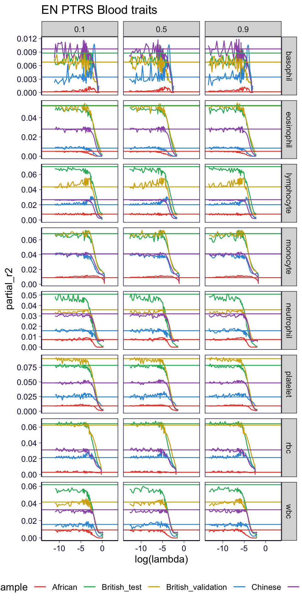
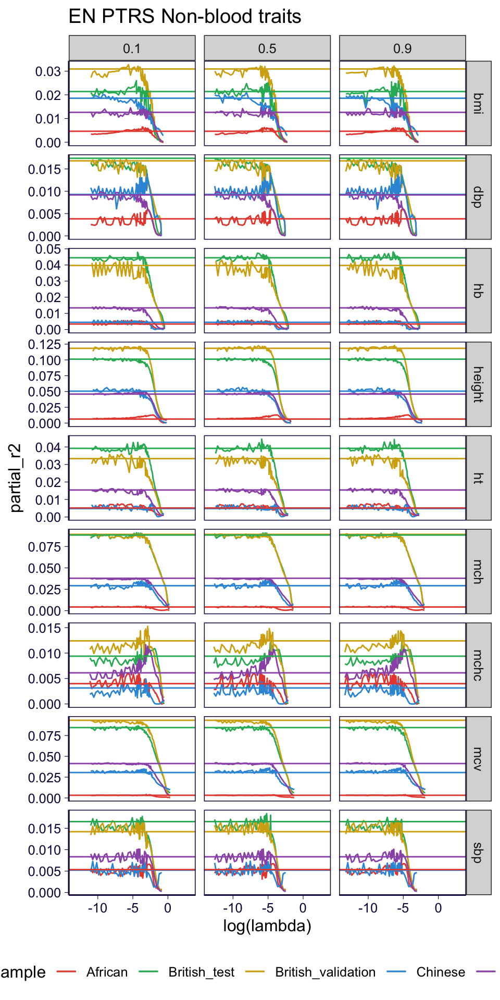
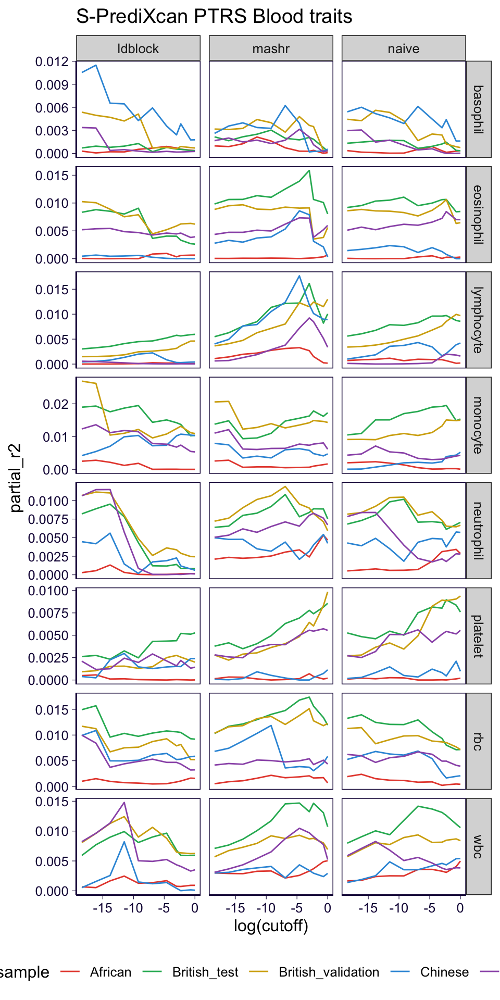
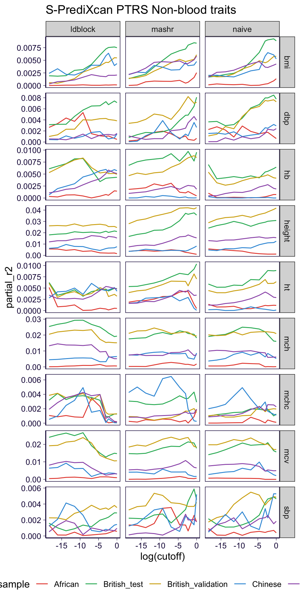
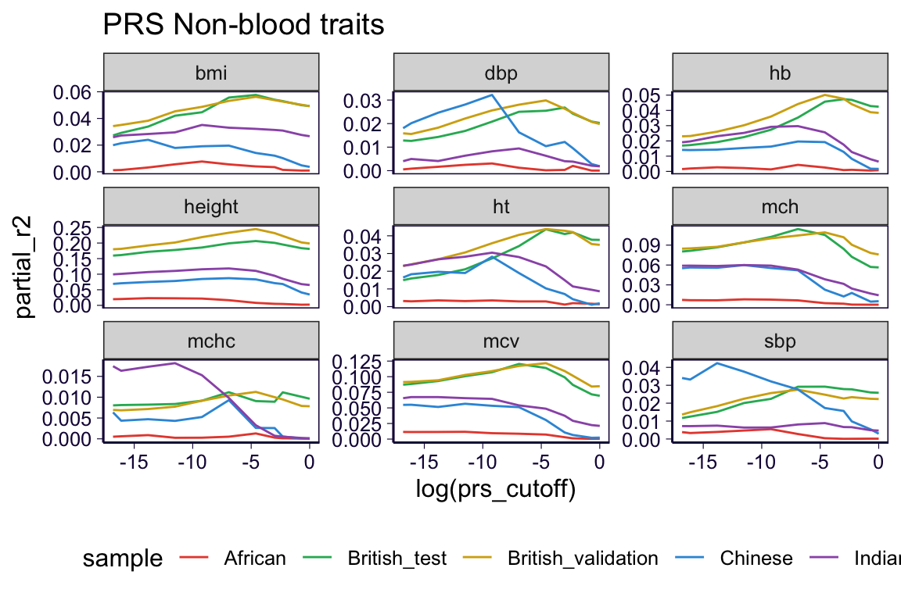
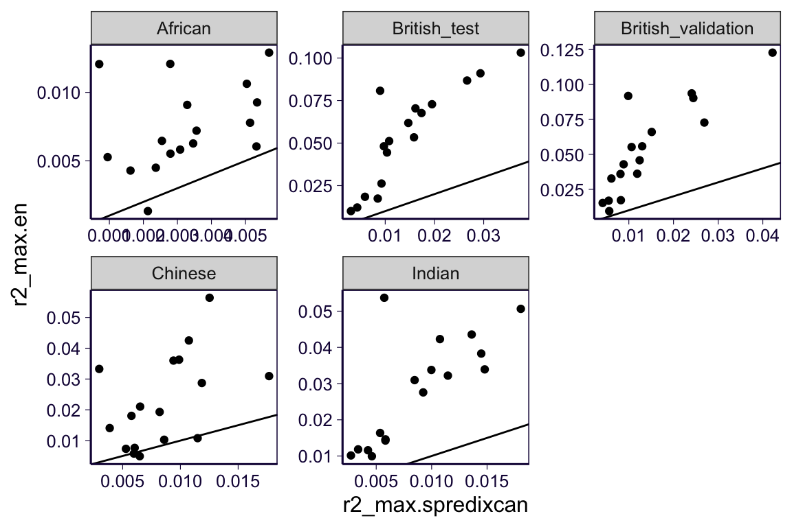
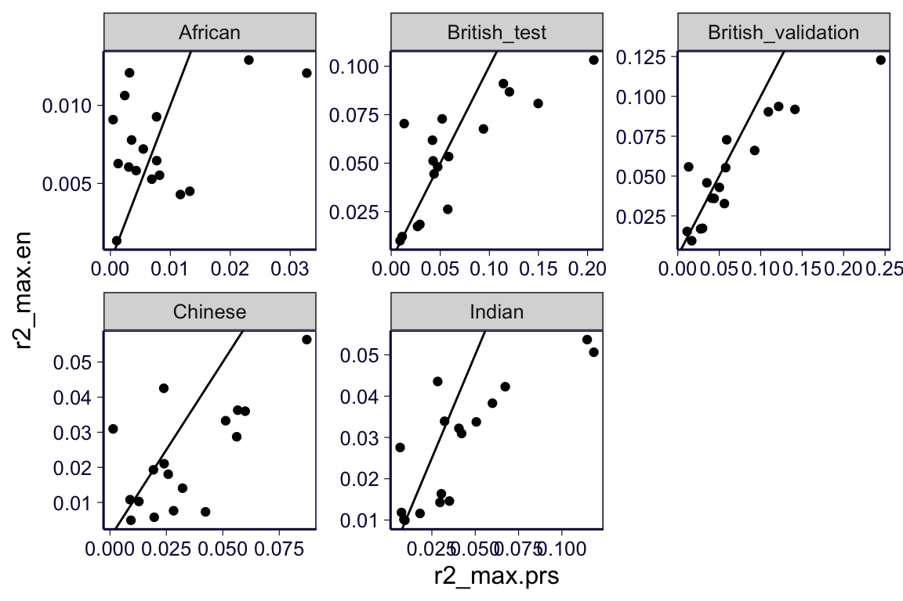
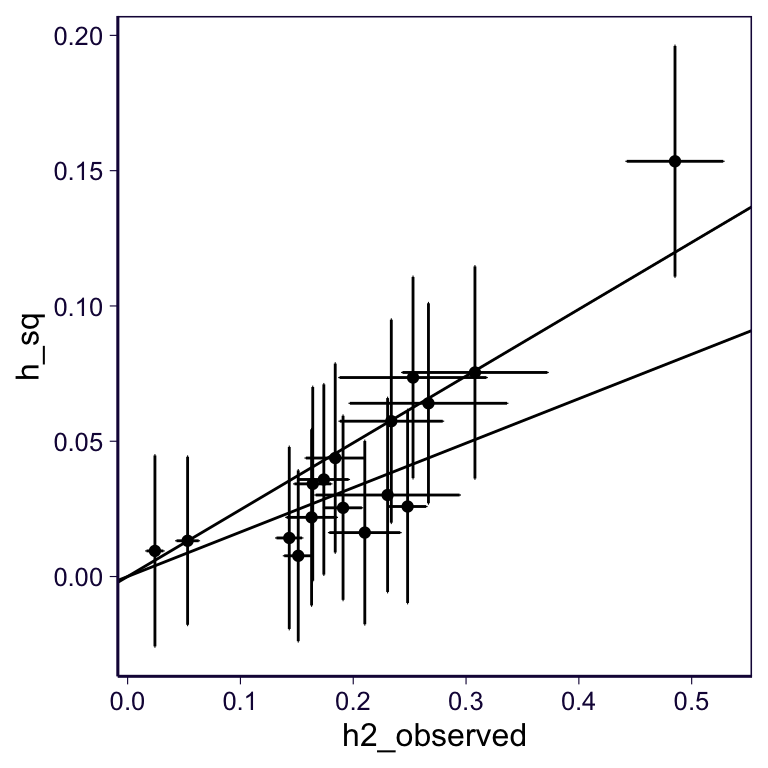
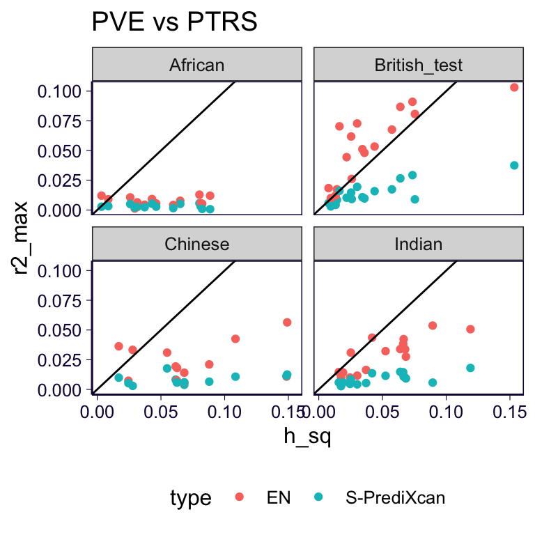
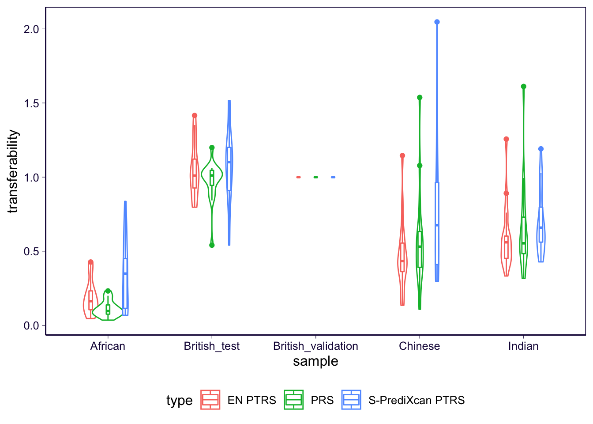

Report on Elastic net based PTRS
library(dplyr)
library(data.table)
library(pander)
library(ggplot2)
panderOptions('table.split.table', Inf)
theme_set(theme_bw(base_size=12))
source('https://gist.githubusercontent.com/liangyy/43912b3ecab5d10c89f9d4b2669871c9/raw/8151c6fe70e3d4ee43d9ce340ecc0eb65172e616/my_ggplot_theme.R')
th$panel.border = element_rect(colour = th$axis.line$colour)
blood_traits = c('wbc', 'rbc', 'platelet', 'lymphocyte', 'monocyte', 'neutrophil', 'eosinophil', 'basophil')
color_mixer = c('African' = '#E74C3C', 'British_test' = '#28B463', 'British_validation' = '#D4AC0D', 'Chinese' = '#3498DB', 'Indian' = '#9B59B6', 'British_insample' = '#AAB7B8')
my_parser = function(x) {
as.numeric(stringr::str_remove(x, 'pval_'))
}1 Overview
Here we implemented elastic net based PTRS predictor along regularization path. We are interested in the performance of EN PTRS as compared to PTRS based on least squares and PTRS based on S-PrediXcan.
2 Load data
df_ls = read.table('~/Desktop/tmp/ptrs-tf/from_nucleus/partial_r2-least_square_model-ukb_imp_x_ctimp_Whole_Blood_British.tsv', header = T, sep = '\t', stringsAsFactors = F)
df_en0 = read.table('~/Desktop/tmp/ptrs-tf/from_nucleus/partial_r2-elastic_net_British.tsv', header = T, sep = '\t', stringsAsFactors = F)
df_en2 = read.table('~/Desktop/tmp/ptrs-tf/from_nucleus/partial_r2-elastic_net_British_finer.tsv', header = T, sep = '\t', stringsAsFactors = F)
df_en = rbind(df_en0, df_en2) %>% arrange(desc(lambda))
df_spredixcan = read.table('~/Desktop/tmp/ptrs-tf/from_nucleus/partial_r2-spredixcan_ptrs.subset1_British.tsv', header = T, sep = '\t', stringsAsFactors = F)
df_prs = read.table('~/Desktop/tmp/ptrs-tf/from_nucleus/partial_r2-prs.subset1_British.tsv', header = T, sep = '\t', stringsAsFactors = F)
df_spredixcan$sample[df_spredixcan$sample == 'British-test-1'] = 'British_test'
df_spredixcan$sample[df_spredixcan$sample == 'British-validation-1'] = 'British_validation'
df_prs$sample[df_prs$sample == 'British-test-1'] = 'British_test'
df_prs$sample[df_prs$sample == 'British-validation-1'] = 'British_validation'
df_spredixcan = df_spredixcan %>% mutate(cutoff = my_parser(ptrs_cutoff))
df_prs = df_prs %>% rename(prs_cutoff = ptrs_cutoff)
df_prs = df_prs %>% arrange(desc(-prs_cutoff))3 EN PTRS along regularization path
df_en %>% filter(trait %in% blood_traits, sample != 'British_insample') %>% ggplot() + geom_path(aes(x = log(lambda), y = partial_r2, color = sample)) + facet_grid(trait~alpha, scales = 'free_y') + geom_hline(data = df_ls %>% filter(trait %in% blood_traits, sample != 'British_insample'), aes(yintercept = partial_r2, color = sample)) + th +
theme(legend.position = 'bottom') +
scale_color_manual(values = color_mixer) +
ggtitle('EN PTRS Blood traits')## Warning: Removed 1690 rows containing missing values (geom_path).
df_en %>% filter(!trait %in% blood_traits, sample != 'British_insample') %>% ggplot() + geom_path(aes(x = log(lambda), y = partial_r2, color = sample)) + facet_grid(trait~alpha, scales = 'free_y') + geom_hline(data = df_ls %>% filter(!trait %in% blood_traits, sample != 'British_insample'), aes(yintercept = partial_r2, color = sample)) + th +
theme(legend.position = 'bottom') +
scale_color_manual(values = color_mixer) +
ggtitle('EN PTRS Non-blood traits')## Warning: Removed 2470 rows containing missing values (geom_path).
Take-away: Except for very occasional cases, regularization dose not help increase the transferability. It is possible that our current lambda grid is too crude. TODO: I will use a finer grid.
4 S-PrediXcan PTRS
df_spredixcan %>% filter(trait %in% blood_traits) %>% ggplot() + geom_path(aes(x = log(cutoff), y = partial_r2, color = sample)) + facet_grid(trait~ptrs_type, scales = 'free_y') + th +
theme(legend.position = 'bottom') +
scale_color_manual(values = color_mixer) +
ggtitle('S-PrediXcan PTRS Blood traits')
df_spredixcan %>% filter(!trait %in% blood_traits, sample != 'British_insample') %>% ggplot() + geom_path(aes(x = log(cutoff), y = partial_r2, color = sample)) + facet_grid(trait~ptrs_type, scales = 'free_y') + th +
theme(legend.position = 'bottom') +
scale_color_manual(values = color_mixer) +
ggtitle('S-PrediXcan PTRS Non-blood traits')
Take-away: No clear pattern to recognize. Generally speaking, the best cutoff could depend on trait.
5 LD-clump PRS
df_prs %>% filter(trait %in% blood_traits) %>% ggplot() + geom_path(aes(x = log(prs_cutoff), y = partial_r2, color = sample)) + facet_wrap(~trait, scales = 'free_y') + th +
theme(legend.position = 'bottom') +
scale_color_manual(values = color_mixer) +
ggtitle('PRS Blood traits')
df_prs %>% filter(!trait %in% blood_traits, sample != 'British_insample') %>% ggplot() + geom_path(aes(x = log(prs_cutoff), y = partial_r2, color = sample)) + facet_wrap(~trait, scales = 'free_y') + th +
theme(legend.position = 'bottom') +
scale_color_manual(values = color_mixer) +
ggtitle('PRS Non-blood traits')
Take-away: Best British cutoff is less stringent than best cutoff for other populations.
6 Best EN PTRS, S-PrediXcan PTRS, and LD-clump PRS
best_en = rbind(
df_ls %>% select(sample, trait, partial_r2),
df_en %>% select(sample, trait, partial_r2)
) %>% group_by(trait, sample) %>% summarize(r2_max = max(partial_r2, na.rm = T)) %>% ungroup()
best_spredixcan = df_spredixcan %>% group_by(trait, sample) %>% summarize(r2_max = max(partial_r2, na.rm = T)) %>% ungroup()
best_prs = df_prs %>% group_by(trait, sample) %>% summarize(r2_max = max(partial_r2, na.rm = T)) %>% ungroup()6.1 EN PTRS vs. S-PrediXcan PTRS
merge = inner_join(best_en, best_spredixcan, by = c('sample', 'trait'), suffix = c('.en', '.spredixcan'))
merge %>% ggplot() + geom_point(aes(x = r2_max.spredixcan, y = r2_max.en)) + facet_wrap(~sample, scales = 'free') + geom_abline(intercept = 0, slope = 1) + th
Take-away: This comparison indicates the need to build multivariate prediction model.
6.2 EN PTRS vs. PRS
merge = inner_join(best_en, best_prs, by = c('sample', 'trait'), suffix = c('.en', '.prs'))
merge %>% ggplot() + geom_point(aes(x = r2_max.prs, y = r2_max.en)) + facet_wrap(~sample, scales = 'free') + geom_abline(intercept = 0, slope = 1) + th
Take-away: EN PTRS has comparable scale to PRS.
7 Heritability vs PVS in British
h2 = readRDS('~/Documents/repo/github/ptrs-ukb/analysis_output/hsq_neale_lab.rds')
pve = readRDS('~/Documents/repo/github/ptrs-ukb/analysis_output/regulability_ctimp.rds')
pve$population[pve$population == 'British-test-1'] = 'British_test'
pve$population[pve$population == 'British-validation-1'] = 'British_validation'
merge = inner_join(h2 %>% select(trait, h2_observed, h2_observed_se), pve %>% filter(population == 'British_test'), by = "trait")
delta_mtd = function(mx, vx, my, vy) {
m = mx / my
v = vx / (my ^ 2) + vy * (mx ^ 2) / (my ^ 4)
return(list(m = m, v = v))
}
meta_fixed = function(m, se) {
w = 1 / (se^2)
mfe = sum(m * w) / sum(w)
vfe = 1 / sum(w)
return(list(m = mfe, se = sqrt(vfe)))
}
ratio = delta_mtd(merge$h_sq, merge$h_sq_se^2, merge$h2_observed, merge$h2_observed_se^2)
merge = merge %>% mutate(ratio_mean = ratio$m, ratio_se = sqrt(ratio$v))
ratio_fe = meta_fixed(merge$ratio_mean, merge$ratio_se)
as.data.frame(ratio_fe, col.names = c('ratio_mean', 'ratio_se')) %>% pander| ratio_mean | ratio_se |
|---|---|
| 0.2057 | 0.02109 |
merge %>% ggplot() +
geom_point(aes(x = h2_observed, y = h_sq)) +
geom_errorbar(aes(x = h2_observed, ymin = h_sq - 1.96 * h_sq_se, ymax = h_sq + 1.96 * h_sq_se)) +
geom_errorbarh(aes(xmin = h2_observed - 1.96 * h2_observed_se, xmax = h2_observed + 1.96 * h2_observed_se, y = h_sq)) +
th +
geom_abline(intercept = 0, slope = ratio_fe$m + 1.96 * ratio_fe$se) +
geom_abline(intercept = 0, slope = ratio_fe$m - 1.96 * ratio_fe$se)
Take-away: PVE is about 20% of heritability.
8 PVE vs PTRS
merge = inner_join(pve, rbind(best_en %>% mutate(type = 'EN'), best_spredixcan %>% mutate(type = 'S-PrediXcan')), by = c('trait', 'population' = 'sample'))
merge %>% ggplot() + geom_point(aes(x = h_sq, y = r2_max, color = type)) + facet_wrap(~population) + th + ggtitle('PVE vs PTRS') + geom_abline(slope = 1, intercept = 0) + theme(legend.position = 'bottom')## Warning: Removed 16 rows containing missing values (geom_point).
Take-away: EN PTRS is better predictor than S-PrediXcan PTRS in general.
9 Heritability vs R2 (British only)
merge = inner_join(h2, rbind(best_en %>% mutate(type = 'EN PTRS'), best_spredixcan %>% mutate(type = 'S-PrediXcan PTRS'), best_prs %>% mutate(type = 'PRS')) %>% filter(sample == 'British_test'), by = c('trait'))
merge %>% ggplot() + geom_point(aes(x = h2_observed, y = r2_max, color = type)) + th + ggtitle('PTRS/PRS vs heritability') + geom_abline(slope = 1, intercept = 0) + theme(legend.position = 'bottom')
Take-away: LD-clump based PRS is not optimal.
10 Transferability
trans_en = best_en %>% left_join(best_en %>% filter(sample == 'British_validation'), by = c('trait'), suffix = c('', '.ref')) %>% mutate(transferability = r2_max / r2_max.ref)
trans_spredixcan = best_spredixcan %>% left_join(best_spredixcan %>% filter(sample == 'British_validation'), by = c('trait'), suffix = c('', '.ref')) %>% mutate(transferability = r2_max / r2_max.ref)
trans_prs = best_prs %>% left_join(best_prs %>% filter(sample == 'British_validation'), by = c('trait'), suffix = c('', '.ref')) %>% mutate(transferability = r2_max / r2_max.ref)
rbind(
trans_en %>% mutate(type = 'EN PTRS'),
trans_spredixcan %>% mutate(type = 'S-PrediXcan PTRS'),
trans_prs %>% mutate(type = 'PRS')
) %>% filter(sample != 'British_insample') %>%
ggplot() + geom_violin(aes(x = sample, y = transferability, color = type), position = position_dodge(width = 0.5)) + geom_boxplot(aes(x = sample, y = transferability, color = type), position = position_dodge(width = 0.5), width = 0.1) + th + theme(legend.position = 'bottom')
Take-away: By using EN, African, Chinese, and Indian do not benefit (as comparing to S-PrediXcan approach) more than British. So that EN PTRS has lower transferability than S-PrediXcan PTRS.